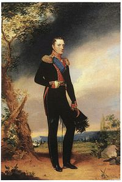

Микола і Тарас
Діючі особи:
Микола Гоголь – продавець душ.
Тарас Бульба – повість, яку населив душами та продав Гоголь.
Тарас Шевченко – жива душа, яка була куплена за гроші, які були заплачені за портрет.
Василь Жуковський – портрет, який намалював Карл Брюллов.
Микола Романов – цар, який купив портрет.
Отже, Микола Гоголь невдовзі після написання повісті «Тарас Бульба» занурюється в «Ревізора». Після історичної романтичної повісті про давні часи з політичними (антипольськими підтекстами) пише гостросоціальну п’єсу про поганих продажних провінційних чинуш, які чекають на свого ревізора (так і хочеться сказати Вашингтона), а отримують брехливого пройдисвіта. П’єса явно кон’юнктурна – сьогоднішньою мовою «антикорупційна», тобто має обґрунтувати мистецькою мовою нову кампанію проти чиновників. Цар задоволений, але розумні люди системи «Жуковський» радять Гоголю тікати. І тут до царя доносять, що з «Тарасом Бульбою» вийшла помилка – поруч з антипольським пафосом та поезією єврейських погромів в текст повісті пролізла військова демократія, на Січі немає ні царя, ні короля. «Тарас Бульба» уособлює демократичну фронду військових (адже він полковник). Під цим текстом легко підписалися б Рилєєв (автор поеми «Войнаровський») та Муравйов-Апостол (який відверто хизувався гетьманським походженням) – нещодавно страчені царем «декабристи». Отаку бульбу підсунув Гоголь царю, можливо це також було причиною втечі успішного драматурга. Здавалося б заборонити «Бульбу» і все. Але цар європейська людина і розуміє що заборонити опублікований текст в освіченому 19 сторіччі, це все одно, що поставити на книжку штамп «Читати обов’язково». Отже, зусиллями того ж таки Жуковського починається операція «переварити Бульбу» чи точніше скажемо «засмажити», а з іншого боку, царю радять і самому долучитися до деміургів, не можна залишати право творити «образи і смисли» якомусь полтавському байкарю, а Пушкіна вбили. Треба створити свого Тараса.
Справді «Кожен Микола має народити свого Тараса». Так-так царя теж звуть Микола (тобто Ніколай). В навколо-мистецьких колах ходить історія про юнака, який гарно малює в білі ночі скульптури в літньому саду. А в день він працює в малярський майстерні, адже він раб (кріпосний, якого пан здав в оренду - тепер в оренду здають футболістів-мільйонер це зовсім не те саме). Добрі люди з «придворної інтелігенції» з’ясовують «ціну свободи» і продають царю неймовірно красиву (з точки зору тодішнього та й сучасного піару) історію про те, як царська родина зібрала гроші на викуп талановитого сироти з рабства у підданого феодала і надала йому можливість здобути мистецьку освіту.
Ось як ця П’єса розгортається у часі.
1783 Отже спочатку народився Жуковський. Його народження дуже схоже на бразильський серіал. Біографічна довідка
Ось як сталося, що син тульського поміщика Буніна був народжений натурально «бендерівкою» Сальхою. Після чого був всиновлений київським поміщиком Андрієм Григоровичем Жуковським, прізвище і титул котрого успадкував, біографи принижують «приживалу Андрея Жуковского», хоча відзначають, що початковою освітою майбутнього царського вчителя займався саме він.
Ось де маємо вловити український сентимент Жуковського. Він спадковий киянин і щирий бендерівець без будь-яких лапок.
Слід відзначити, що всі молоді роки поета і царедворця були результатом необов’язкової доброти його невизнаних родичів та інших людей. Дивним чином, ця необов’язкова доброта і увага до нього призвичаїла його поширювати «всякоє смягчєніє нравов». На цьому півжиття їхав Гоголь та отримав дивовижний шанс Тарас.
1796 Потім народився Микола (Ніколай) Павлович Романов - третій син імператора Павла.
1801 Коли Миколі було чотири роки придворні «гвардійці» підступно і безжально вбили його батька імператора Павла проголосивши царем старшого брата Олександра, так само як за кілька десятиліть перед цим ті ж таки (але інші) гвардійці вбили його діда Петра ІІІ проголосивши правительницею бабусю. Отакий «добрий дім» Романових.
1809 В родині нащадків козацької старшини народжується Микола Гоголь-Яновський. Згідно з наявними генеалогічними деревами, він міг вважати себе нащадком гетьманів Остапа Гоголя, Івана Скоропадського, Петра Дорошенка (не плутати з «цинічним бендерівцем» Петром Порошенком)
1814 Народився Тарас Шевченко - кріпосний, що рано став сиротою.
1825 Імператор Олександр (Александр) помер не залишивши після себе дітей. Другий брат Костянтин (Константін) відмовляється від трону через не дуже правильний шлюб.
 Так в свої 29 років Микола (Ніколай) приймає присягу придворних, як новий імператор. Під час прийняття присяги гвардійців відбувається безглуздий заколот, організований молодими офіцерами з аристократичних родів (так званими декабристами). Заколот провалився - виявилося, що до нього причетні військові по всій імперії. П’ятьох лідерів заколоту повішено. Серед них Сергій Муравйов-Апостол (праправнук гетьмана Данила Апостола), який натурально організував повстання Чернігівського полку, та Кондратій Рилєєв, автор поеми «Войнаровський» (про племінника Мазепи, проголошеного гетьманом в еміграції).
Дивним чином, «розбещена» європейськими ідеями придворна аристократія, виховала в Миколі любов до військової дисципліни та прихильність до мистецтв.
1828
 Микола Гоголь-Яновський прибуває до Петербурга, щоб зробити літературну кар’єру.
Микола Гоголь-Яновський прибуває до Петербурга, щоб зробити літературну кар’єру.
1835 Перша редакція повісті «Тарас Бульба» була опублікована в збірці «Миргород».
 Невдовзі перед цим Гоголь загубив десь Яновського. Перша редакція твору радше
протипольська, козацький полковник підбурює повстання, лиш для годиться згадуючи
«віру православну».
Після польського повстання історія про руських козаків, які повстали проти поганих поляків,
а перед тим провели єврейський погром, пішла на ура.
Невдовзі перед цим Гоголь загубив десь Яновського. Перша редакція твору радше
протипольська, козацький полковник підбурює повстання, лиш для годиться згадуючи
«віру православну».
Після польського повстання історія про руських козаків, які повстали проти поганих поляків,
а перед тим провели єврейський погром, пішла на ура.
1836 Через кілька місяців Гоголь випускає «Ревізор», і заслуговує на особисту подяку царя (у формі діамантового персня) за злободенну п’єсу про брехливих та злодійкуватих чиновників. За розумною порадою (когось із ображених та наляканих чиновників) чи послуговуючись власною інтуїцією, Гоголь в момент фавору, продає права на п’єсу і втікає з Росії закордон. Невдовзі ідеологи проснулися і зрозуміли, що нічого доброго в «Тарасі Бульбі» немає. Адже українське повстання проти короля і польське повстання проти царя по суті смута і бунт. Ім’я Тарас в імперії тепер буде синонімом народного повстання проти монарха. Що робити, Гоголь втік, «Тарас Бульба» надрукований.
1837 Пушкін стомився від життя і був шляхетно вбитий його родичем Дантесом. "Полтава" проти "Мазепи" Байрона написана, але хто тепер воюватиме з Бульбою? "Капитанская дочка" чи може Проспер Меріме (автор надзвичайно цікавої історичної розвідки "Богдан Хмельницький")?
1838
.png) Сошенко і Брюллов розповідають Жуковському про сироту з винятковими художніми здібностями,
а він підсовує царю неймовірно красиву історію «царя-визволителя»,
який за власні гроші «через лотерею» викупає нового молодого талановитого Тараса,
який намалює нову гармонійну імперію без смут і бунтів.
І ніяких книжок.
Сошенко і Брюллов розповідають Жуковському про сироту з винятковими художніми здібностями,
а він підсовує царю неймовірно красиву історію «царя-визволителя»,
який за власні гроші «через лотерею» викупає нового молодого талановитого Тараса,
який намалює нову гармонійну імперію без смут і бунтів.
І ніяких книжок.
1842 Друга редакція повісті «Тарас Бульба» була підготовлена Гоголем під явним тиском цензури.
1847 Шевченко заарештований за доносом. Імперія наносить удар у відповідь - головна крамола знайдена під час обшуків - вірші. Шевченка звинуватили в написанні віршів «малоросійською мовою», з якими «могли посіятись і згодом укоренитися думки про вигадане блаженство часів Гетьманщини, про щастя повернути ці часи й про можливість Україні існувати як окремій державі». Царська доброта визнана помилкою - художника відправляють солдатом до армії з категоричною забороною "писать і рисовать".
1852 Гоголь помирає в палаці Александра Толстого. За кілька місяців зв кордоном помирає Жуковський.
1855 Після ганебної поразки у Кримській війні помирає імператор Микола І.
1857 Тараса Шевченка повернули із заслання. Повернув його учень Жуковського Олександр ІІ. Ось, як Тарас Шевченко відгукнеться на таємний подарунок генія, в тексті він заперечує історію Тараса Бульби - "не заріже батько сина". Тарас не згоден з "братом Миколою" щодо Тараса:
ГОГОЛЮ
За думою дума роєм вилітає,
Одна давить серце, друга роздирає,
А третяя тихо, тихесенько плаче
У самому серці, може, й Бог не бачить.
Кому ж її покажу я,
І хто тую мову
Привітає, угадає
Великеє слово?
Всі оглухли — похилились
В кайданах... байдуже...
Ти смієшся, а я плачу,
Великий мій друже.
А що вродить з того плачу?
Богилова, брате...
Не заревуть в Україні
Вольнії гармати.
Не заріже батько сина,
Своєї дитини,
За честь, славу, за братерство,
За волю Вкраїни.
Не заріже — викохає
Та й продасть в різницю
Москалеві. Це б то, бачиш,
Лепта удовиці
Престолові- отечеству
Та німоті плата.
Нехай, брате. А ми будем
Сміяться та плакать.